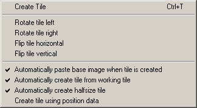

Create Tile
Rotate Tile Left
Rotate Tile Right
Flip Tile Horizontally
Flip Tile Vertically
Automatically Paste Base Tile When Tile Is Created (Default: Selected)
Automatically Create Tile From Working Tile (Default: Selected)
Automatically Create Halfsize Tile (Default: Selected)
Create Tile Using Position Data (Default: NOT Selected)